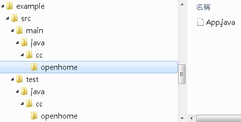

|
在
使用Ant時，你所需要作的，就是準備好相關的目錄架構、定義建構檔案、定義建構流程、自行管理程式庫的相依性、定義各種變數名稱、定義
Classpath等，你的目錄要命名為什
麼？你的建構流程順序為何？流程間的相依性為何？目標名稱為何？變數名稱為何？這些都可以自行決定，一切都很自由！
Ant提供給你的是建立建構環境（Build
Environment）的工具，因而以上的自定義彈性是Ant的優點，彈性的另一面帶來的就是設定上的瑣
碎與麻煩，專案有時會出現某些固定的範例，所以經常地，另一個新的類似專案開始時，你可能會複製原有的某個專案，修改部份
設定、修改建構流程等！你所需要的是一定的慣例，而不是花時間在瑣碎的設定上時，Ant也許不會是最好的選擇。
Maven提供你的是建構環境，或說是建構環境的框架
（Framework）。Maven的主要精神有：
- 慣例先於設定（Convention over configuration）
舉例來說，在Maven中認為，專案開發遵循應某些慣例，
這些慣例像是固定目錄的名稱與架構、固定變數的名稱、固定的建構生命周期
（Build lifecycle）等。Maven認為你不應花費時間在這些慣例的設定上，而要將精神放在更重要的工作上。
- 集中管理相依性（Dependency management）
正如在 簡介 Apache Ivy 中提到的，程式庫的相依性管理是個頭痛的問題，Maven使用集中式管理，提供集中式的貯藏室（Central repository），你要在設定檔案宣告
相依的程式庫等資訊，Maven會為你下載相關的檔案。
Maven
提供固定的建構生命周期，像是Default、Clean、Site等。在每個生命周期中，又會分作一些階段（Phase），
像是Default生命周期中，會有Validate、Compile、Test、Package、Integration
test、Verify、Install、Deploy等階段，每個階段會有一些相繫結的plugin，Maven本身會有一些預設的plugin，你也
可以在設定檔中依需求宣告想使用的plugin，Maven會自動取得plugin。
- 專案物件模型（Project Object Model）
在Ant中使用build.xml來定義建構過程中的所有
資訊，在Maven中與之對應的是pom.xml，不過
pom.xml主要的目的是提供專案資訊，像是專案名稱、組織名稱、相依資訊等。例如：
<project>
<modelVersion>4.0.0</modelVersion>
<groupId>cc.openhome</groupId>
<artifactId>example</artifactId>
<version>1.0-SNAPSHOT</version>
<packaging>jar</packaging>
<name>example</name>
<url>http://maven.apache.org</url>
<properties>
<project.build.sourceEncoding>UTF-8</project.build.sourceEncoding>
</properties>
<dependencies>
<dependency>
<groupId>junit</groupId>
<artifactId>junit</artifactId>
<version>3.8.1</version>
<scope>test</scope>
</dependency>
</dependencies>
</project>
你不用像在Ant中提供建構動作等資訊。事實上，相關的建構資訊都是由一個父POM繼承下來，事實上，你也可以定義POM繼
承自另一個POM，像是相依性設定、plugin設定等，這是其為何命名為POM的原因，
就像是物件會有繼承關係，這樣的設定文件模型也可以有著繼承關係。
先來直接使用Maven建構簡單的專案作為開始，你可以至 http://maven.apache.org/ 下載
Maven，將檔案解開後，在文字模式下設定M2_HOME環
境變數為Maven的目錄，並在PATH中加入Maven目錄的bin目錄。要建立第一個Maven專案，可以如下執行指令：
>
mvn archetype:create -DgroupId=cc.openhome -DartifactId=example
[INFO] Scanning for projects...
Downloading:
http://repo1.maven.org/maven2/org/apache/maven/plugins/maven-clean-
plugin/2.4.1/maven-clean-plugin-2.4.1.pom
Downloaded:
http://repo1.maven.org/maven2/org/apache/maven/plugins/maven-clean-p
lugin/2.4.1/maven-clean-plugin-2.4.1.pom (5 KB at 1.3 KB/sec)
Downloading:
http://repo1.maven.org/maven2/org/apache/maven/plugins/maven-plugin
...略
[INFO] Parameter: groupId, Value: cc.openhome
[INFO] Parameter: packageName, Value: cc.openhome
[INFO] Parameter: package, Value: cc.openhome
[INFO] Parameter: artifactId, Value: example
[INFO] Parameter: basedir, Value: C:\workspace
[INFO] Parameter: version, Value: 1.0-SNAPSHOT
[INFO] ********************* End of debug info from resources from
generated POM
***********************
[INFO] project created from Old (1.x) Archetype in dir:
C:\workspace\example
[INFO]
------------------------------------------------------------------------
[INFO] BUILD SUCCESS
[INFO]
------------------------------------------------------------------------
[INFO] Total time: 2:09.095s
[INFO] Finished at: Mon Jan 24 16:15:18 CST 2011
[INFO] Final Memory: 6M/15M
[INFO]
------------------------------------------------------------------------ |
在這邊使用mvn指令呼叫了maven-archetype-plugin建立新專案，這是一個用來描述專
案架構的plugin，如果這個plugin不存在，mvn會先下載相關檔案，預設會下載至使用者目錄的.m2資料夾中，然
後依plugin的描述建立專案相關檔案與資料夾，依慣例，原始碼會放在src/main/java中，
而測試相關原始碼會放在test/java中：

預設會在src/main/java（加上你的套件名稱的資料夾）中建立一個
App.java，並在test/java（加上你的套件名稱的資料夾）中建立一個AppTest.java，在建立的新
專案根目錄中，還有個pom.xml，內容就如上面所列的XML，與
Ant的build.xml不同的是，接下來要編譯、執行、打包程式，暫時都不用理會pom.xml，因為都有著既定的慣例（如果是Ant，接著你得先設
定build.xml了）。
在建立新專案時，指定了groupId，這用來設定你的組織名稱，這
會成為預設的套件名稱。在Maven的專案中管理各種的專案製品
（artifact），artifactId指的是這
些製品的識別名稱，這將成為你存放製品的資料夾名稱，通常就是專案名稱。
App.java的內容只是個簡單的Hello World!：
package cc.openhome;
/**
* Hello world!
*
*/
public class App
{
public static void main( String[] args )
{
System.out.println( "Hello World!" );
}
}
如果想要編譯程式，可以如下：
>
example>mvn compile
[INFO] Scanning for projects...
[INFO]
[INFO]
------------------------------------------------------------------------
[INFO] Building example 1.0-SNAPSHOT
[INFO]
------------------------------------------------------------------------
Downloading:
http://repo1.maven.org/maven2/org/apache/maven/plugins/maven-resour
ces-plugin/2.4.3/maven-resources-plugin-2.4.3.pom
Downloaded:
http://repo1.maven.org/maven2/org/apache/maven/plugins/maven-resourc
es-plugin/2.4.3/maven-resources-plugin-2.4.3.pom (6 KB at 1.8 KB/sec)
...略
[INFO] Compiling 1 source file to C:\workspace\example\target\classes
[INFO]
------------------------------------------------------------------------
[INFO] BUILD SUCCESS
[INFO]
------------------------------------------------------------------------
[INFO] Total time: 1:04.216s
[INFO] Finished at: Mon Jan 24 16:33:32 CST 2011
[INFO] Final Memory: 5M/15M
[INFO]
------------------------------------------------------------------------
|
這呼叫了Maven的maven-compiler-plugin，
如果還沒下載過這個plugin，同樣會先進行下載，然後進行編譯，編譯出來的東西，會放在target\classes中。
如果要指定某個具程式進入點的主類別執行程式，可以如下：
>
mvn exec:java -Dexec.mainClass=cc.openhome.App
[INFO] Scanning for projects...
Downloading:
http://repo1.maven.org/maven2/org/apache/maven/plugins/maven-surefi
re-plugin/2.7.1/maven-surefire-plugin-2.7.1.pom
Downloaded:
http://repo1.maven.org/maven2/org/apache/maven/plugins/maven-surefir
e-plugin/2.7.1/maven-surefire-plugin-2.7.1.pom (10 KB at 5.7 KB/sec)
...略
[INFO]
[INFO] --- exec-maven-plugin:1.2:java (default-cli) @ example ---
Hello World!
[INFO]
------------------------------------------------------------------------
[INFO] BUILD SUCCESS
[INFO]
------------------------------------------------------------------------
[INFO] Total time: 0.762s
[INFO] Finished at: Mon Jan 24 16:41:49 CST 2011
[INFO] Final Memory: 4M/15M
[INFO]
------------------------------------------------------------------------
|
這會使呼叫Maven的exec-maven-plugin，
你使用exec.mainClass來指定執行程式的主類別。
如果要包裝程式為JAR，可以如下：
>
mvn package
[INFO] Scanning for projects...
[INFO]
[INFO]
------------------------------------------------------------------------
[INFO] Building example 1.0-SNAPSHOT
...略
[INFO] Compiling 1 source file to
C:\workspace\example\target\test-classes
...略
-------------------------------------------------------
T E S T S
-------------------------------------------------------
Running cc.openhome.AppTest
Tests run: 1, Failures: 0, Errors: 0, Skipped: 0, Time elapsed: 0.015
sec
Results :
Tests run: 1, Failures: 0, Errors: 0, Skipped: 0
...略
[INFO] Building jar:
C:\workspace\example\target\example-1.0-SNAPSHOT.jar
[INFO]
------------------------------------------------------------------------
[INFO] BUILD SUCCESS
[INFO]
------------------------------------------------------------------------
[INFO] Total time: 45.107s
[INFO] Finished at: Mon Jan 24 16:44:44 CST 2011
[INFO] Final Memory: 8M/21M
[INFO]
------------------------------------------------------------------------
|
在這邊，雖然你指定了包裝JAR，但Maven的建構生命周期有其相依順序，每個階段（Phase）前可能有必須先執行的階
段，階段有點像Ant的目標（Target），在使用Ant時，你必須自行指定目標的相依性，但Maven中，階段與階段間的相依性有預設的慣例，如上所
看到的，你必須先經過Compile階段、測試階段然後到包裝階段，包裝完成的JAR檔會放在target目錄中。
|